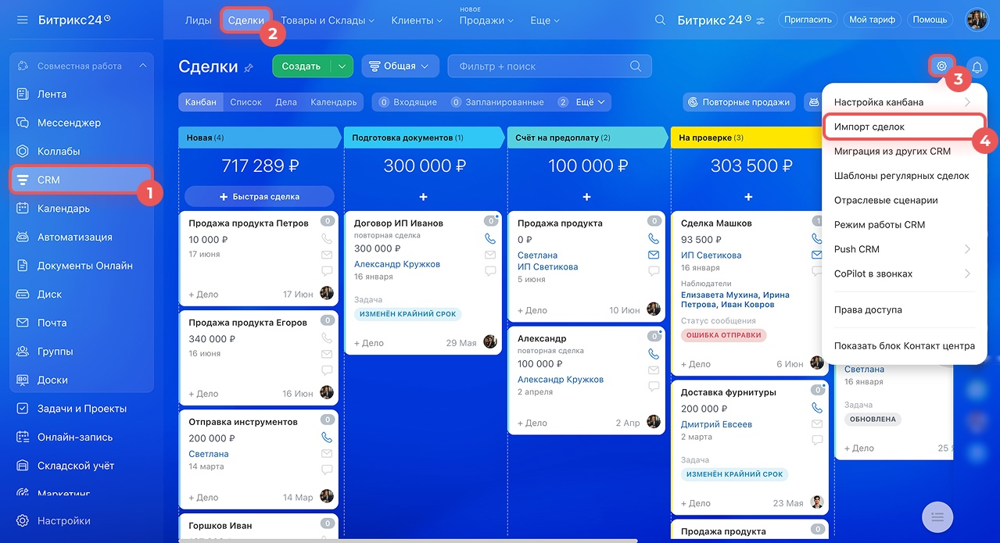
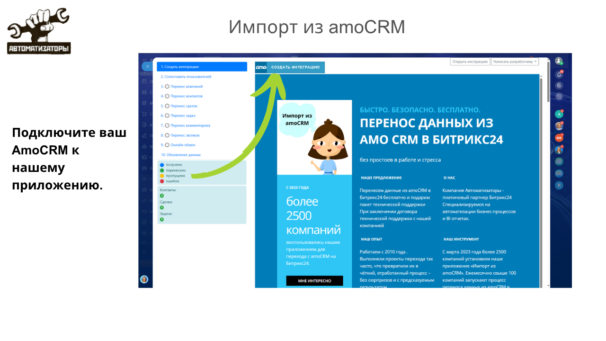
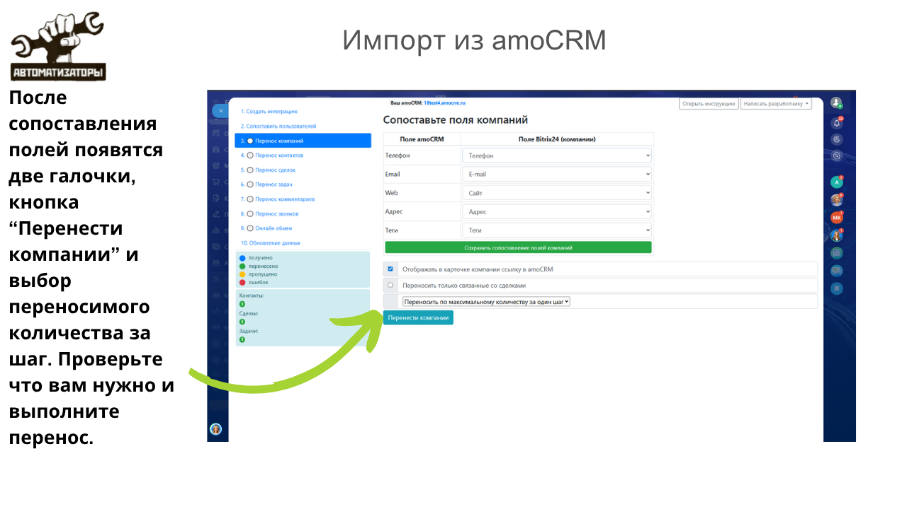
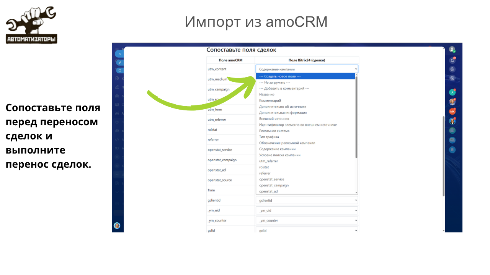
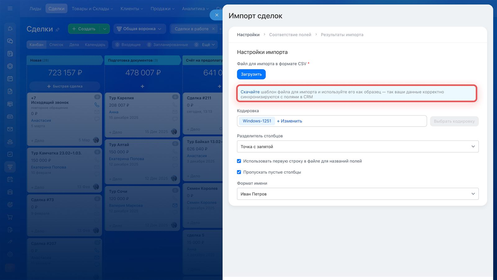
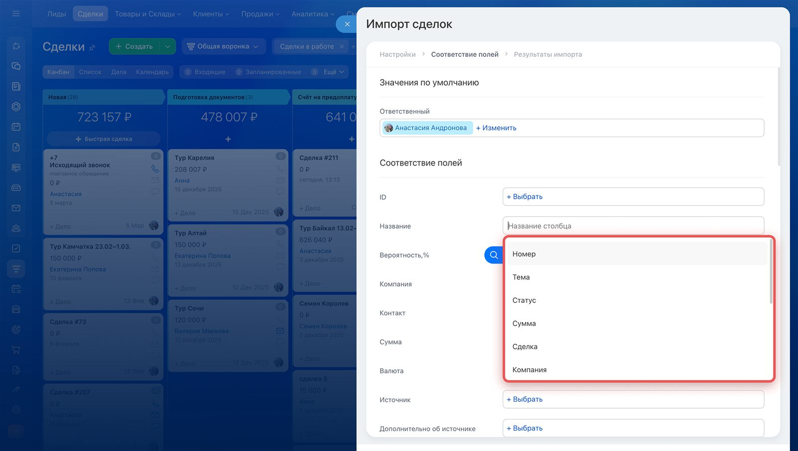

Миграция в Битрикс24: перенос данных из amoCRM и других CRM
Чаще всего к нам приходят с amoCRM — компания выросла, и узкой воронки продаж уже не хватает: нужны задачи и проекты, склад, сайты, телефония и аналитика в одном месте. Реже переезжают с «Мегаплана», Excel-таблиц или других CRM. И почти в каждом таком проекте первый вопрос один и тот же: «А всё перенесётся?». Если отвечать честно — нет, не всё. Разбираем, какими способами переносят данные в Битрикс24 и почему часть потерь неизбежна при любом из них.
Почему компании уходят с amoCRM и других систем
amoCRM — хороший инструмент именно для отдела продаж: воронка, сделки, базовая автоматизация. Но когда компания растёт, ей нужно больше, чем воронка продаж. Появляются задачи и проекты с постановкой и контролем исполнения, склад и учёт товаров, документооборот, сквозная аналитика, интеграция с 1С, база знаний, HR-процессы — и всё это хочется видеть в одной системе, а не собирать из пяти разных сервисов с ручной синхронизацией между ними.
Битрикс24 в этом смысле — не просто другая CRM, а более широкая платформа: CRM, задачи, контакт-центр для мессенджеров и соцсетей, склад, сайты, HR и BI-аналитика работают в одном портале. Плюс возможность выбрать коробочную версию, если важно держать данные на своём сервере. Поэтому переход обычно происходит не из-за недовольства amoCRM как таковым, а потому что компания переросла узкоспециализированный инструмент.
Три способа перенести данные в Битрикс24
У переноса данных в Битрикс24 нет единой кнопки «мигрировать всё автоматически». Есть три принципиально разных пути, и штатная справка Битрикс24 прямо перечисляет их в разделе CRM — Настройки: приложение-мигратор из Маркета, встроенный импорт CSV и миграция через API силами партнёра. Для большинства сделок и лидов доступ к этим вариантам открывается прямо из меню раздела CRM, рядом с обычным импортом.

 Готовый мигратор под конкретную систему — amoCRM, Excel, Zoho CRM, Trello, «МойСклад» и другие
Готовый мигратор под конкретную систему — amoCRM, Excel, Zoho CRM, Trello, «МойСклад» и другие- Самый быстрый и дешёвый вариант — для небольших и типовых баз без сложной кастомизации
- Устанавливает и запускает администратор портала, без программирования
- Штатный инструмент Битрикс24 — работает с любой системой, из которой можно выгрузить таблицу
- Подходит, если для вашей CRM нет готового мигратора в Маркете
- Требует ручной подготовки файла и сопоставления полей — доступен только новым сделкам, обновить существующие импортом нельзя
Третий вариант — миграция через API силами интегратора — нужен, когда первые два не годятся: база большая, в ней много нестандартных полей, нужно сохранить файлы и вложения, историю переписки или привязать перенос к параллельной доработке портала. Сам Битрикс24 прямо предлагает этот путь тем, кто не хочет разбираться самостоятельно: в справке есть форма «наш партнёр поможет перенести данные из вашей системы в Битрикс24» — по сути, приглашение обратиться к интегратору, а не делать миграцию своими силами.
Миграторов в Маркете Битрикс24 хватает не только на amoCRM
В Маркете Битрикс24 есть отдельный раздел «Импорт, экспорт → Миграция в Б24» — десятки приложений под конкретные источники: несколько конкурирующих миграторов для amoCRM, импорт из Excel и Google Таблиц, перенос из Zoho CRM и Zoho Inventory, «МойСклад», Trello, GetCourse, чатов Telegram и Microsoft Teams, переезд между двумя порталами самого Битрикс24 — облачным и коробочным. Для самых частых сценариев готовое решение обычно уже есть.

Самое популярное такое приложение для amoCRM — «Импорт из amoCRM» — по данным разработчика, переносит компании, контакты, сделки, задачи, примечания и звонки без ограничения по количеству записей, и делает это довольно быстро: например, 16 644 контакта переносятся примерно за 45 минут, 8 764 сделки — чуть больше часа. Есть и второе популярное приложение — «Мигратор amoCRM» — с более чем 14 000 установок: конкуренция между разработчиками миграторов обычно означает, что типовой сценарий «amoCRM → Битрикс24» хорошо обкатан и отлажен.
Перенос — это не одна кнопка, а пошаговая сверка
Даже у самого отлаженного мигратора перенос — это не «нажал и жди»: систему нужно подключить, сопоставить сотрудников, воронки и поля вручную. Разберём на примере переноса сделок из amoCRM.
1. Подключение
Администратор авторизуется в amoCRM и разрешает приложению доступ к данным аккаунта.
2. Сотрудники
Пользователи amoCRM сопоставляются с сотрудниками Битрикс24 — по почте автоматически, остальные вручную.
3. Воронки и поля
Воронки, стадии сделок и поля карточек сопоставляются с аналогами в Битрикс24 или создаются заново.
4. Перенос по сущностям
Компании, контакты, сделки, задачи, комментарии и звонки переносятся отдельными шагами — с прогрессом по каждому.

Почему часть данных теряется при любом способе переноса
Главная причина проста: у amoCRM, «Мегаплана», Excel-таблицы и Битрикс24 разная структура данных. Где-то нет прямого аналога поля, где-то логика работает иначе. Мигратор не может выдумать поле, которого в целевой системе не существует, — он либо предлагает создать новое, либо просто не переносит значение.

- Записи звонков и вложения — переносятся не всеми миграторами, иногда только ссылкой или вовсе не переносятся
- Комментарии — как правило, только текстовые примечания, без системных событий и части типов сообщений
- Дата завершения сделки — штатный импорт CSV заменяет её датой загрузки файла, если не подготовить обходной путь заранее
- Нестандартные и вычисляемые поля — если для них нет аналога в Битрикс24, их либо создают заново, либо не переносят
- Бизнес-процессы и автоматизация — переносится только сырой набор данных, логику воронки нужно настраивать в Битрикс24 заново
- У систем разная структура данных — прямого аналога поля или сущности иногда просто не существует
- Штатные миграторы Маркета рассчитаны на типовой сценарий, а не на вашу уникальную конфигурацию
- Перенести можно практически всё — но через кастомную разработку под API, а это уже не бесплатное приложение, а отдельный проект по деньгам и срокам
- Импортировать штатно можно только новые записи — обновить существующие сделки повторным импортом нельзя
Поэтому первый честный шаг любой миграции — не запуск переноса, а быстрый аудит: что действительно важно перенести, а что проще завести заново в Битрикс24 с чистого листа. Основная база клиентов, сделок и истории общения переносится почти всегда без серьёзных потерь. А вот тонкая настройка старой системы — автоматизация, нестандартные поля, специфичные интеграции — почти никогда не переезжает «как было», и это нормально: у Битрикс24 для тех же задач часто есть свои штатные инструменты, просто настроенные иначе.
Универсальный импорт CSV: медленнее, но работает с чем угодно
Если для вашей CRM в Маркете нет отдельного приложения — например, данные лежат в узкоспециализированной или самописной системе — остаётся встроенный импорт из CSV-файла. Он есть в каждом разделе CRM: лидах, сделках, контактах, компаниях, товарах.

Дальше — обязательный шаг сопоставления полей: слева поля карточки Битрикс24, справа — столбцы из вашего файла. Если что-то не сопоставлено или сопоставлено неверно, значение просто не попадёт в нужное место.

Способ надёжный и бесплатный, но трудоёмкий: файл нужно правильно подготовить, а часть штатных полей ведёт себя не так, как ожидаешь — например, при импорте завершённых сделок Битрикс24 подставляет в поле «Дата завершения» дату самой загрузки файла, а не реальную дату из старой системы. Обойти это можно, но только через дополнительное пользовательское поле и настройку робота — то есть снова через ручную работу, а не «из коробки».
А если база большая и без потерь важна каждая деталь?
Тысячи сделок с нестандартными полями, вложениями, историей звонков и завязанной на них автоматизацией — тот случай, когда штатный мигратор или CSV не справятся. Настраиваем перенос через API, тестируем на части базы и сверяем результат до того, как отключить старую систему.
Что входит в переход на Битрикс24 с другой CRM
Аудит базы
Смотрим, что в старой системе есть на самом деле: сколько сделок, какие поля используются, а какие давно не заполняются.
Выбор способа
Оцениваем объём и сложность данных и предлагаем реалистичный вариант — приложение из Маркета, импорт CSV или перенос через API.
Список потерь заранее
Прямо говорим, что не перенесётся или потребует ручной доработки — до начала работ, а не после.
Тестовый перенос
Сначала переносим часть базы и сверяем цифры — количество записей, суммы сделок, привязку к сотрудникам.
Основной перенос и проверка
Переносим всю базу, проверяем результат и настраиваем воронки и автоматизацию под процессы компании в Битрикс24.
Переезжаете с amoCRM или другой CRM?
Проведём аудит базы, честно скажем, что перенесётся без потерь, а что — нет, и подберём способ миграции под объём и бюджет проекта.